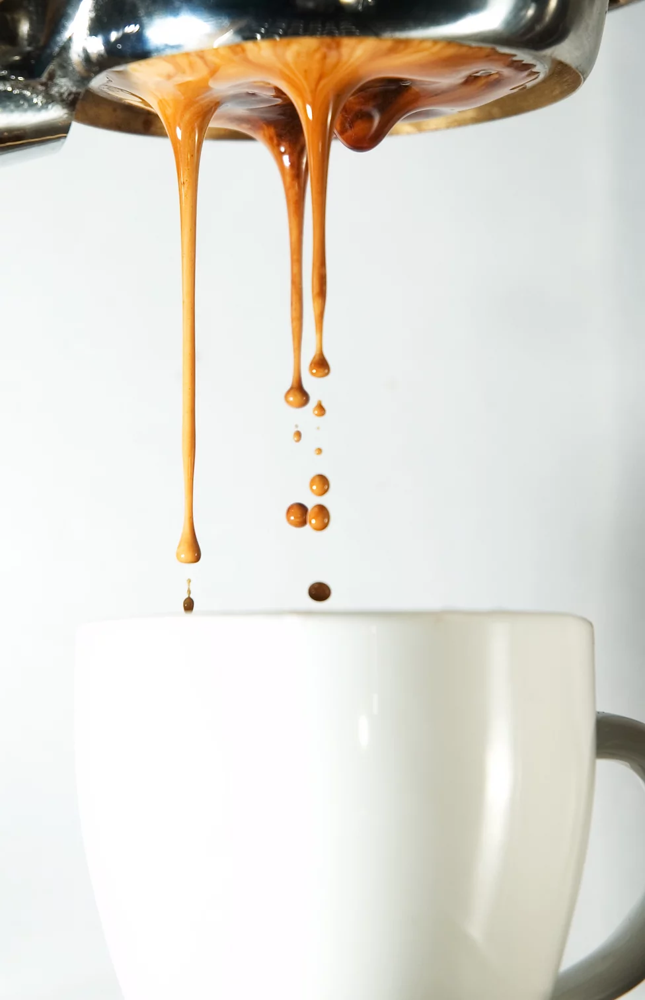

The Passion in a Cup
My Passion for Coffee Starts with enjoying a cup with
my mother in the early
morning. The smell is always a
reminiscent of family throughout my travels. Whenever I start my shift, the smell of brew welcomes me like a
warm, soothing hug.
After my first experience as a barista, I welcomed the knowledge of coffee growing, roasting, and brewing.
As
I travel, I expand my expertise and explore local roasting techniques.
Every cup of coffee is an experience that starts with cultivation, sourcing, roasting, and finishes with a
styled finish from the barista themselves.
Why add milk to coffee?
Milk is largely made up of fats and proteins, and both affect the way a cup of coffee tastes. Fats in milk enhance a cup of coffees “mouth feel.” While coffees can have little or large bodies, all brewed coffee is primarily water and it feels like drinking water. Adding fats from milk change the texture of coffee, making it thicker and, when done well, giving it a velvety smoothness.